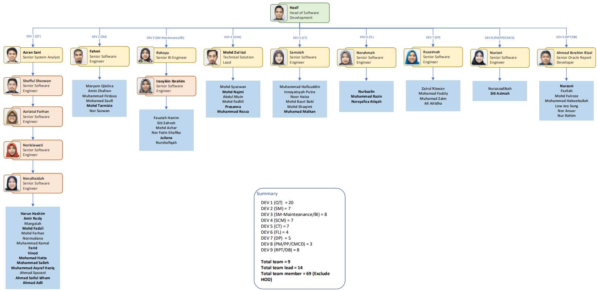

INDUSTRIAL TRAINING
1.1 Introduction of Industrial Training
INDUSTRIAL TRAINING —
Industrial training is a structured program that allows students to gain practical experience in a real working environment related to their field of study. It acts as a bridge between academic learning and professional practice, helping students understand how theories are applied in real-life situations.
Through industrial training, students are exposed to workplace culture, responsibilities, and industry standards. This experience helps them adapt to professional environments while developing important skills such as communication, teamwork, and problem-solving.
OBJECTIVES OF INDUSTRIAL TRAINING —
Industrial training aims to equip students with practical knowledge and essential skills required in the workplace. It also helps students adapt to professional environments and understand industry expectations.
- Apply theoretical knowledge in real situations
- Develop technical and professional skills
- Improve communication and teamwork
- Understand workplace ethics and responsibilities
IMPORTANCE OF INDUSTRIAL TRAINING —
Industrial training is important in preparing students for the transition from academic life to the professional world. It provides real-world exposure that helps students build confidence, gain experience, and understand workplace expectations.
- Prepares students for future careers
- Builds confidence and independence
- Enhances employability and job readiness
- Provides exposure to industry practices
- Helps students identify their career interests
COMMERCE DOT COM
1.2 Background of the Organization
Company Building

Established in 1999 with a singular mission, commercedotcom commonly known as CDC, pioneered the nation’s transition from manual to electronic procurement, culminating in the launch of ePerolehan—one of the world’s first nationwide electronic procurement systems. Operating under a Public-Private Partnership (PPP) with the Government of Malaysia, CDC introduced technology into procurement, addressing infrastructure and digital literacy challenges to enable smooth adoption.
CDC is mainly known for developing and operating Malaysia’s electronic government procurement system called ePerolehan. This system allows the Malaysian government to buy goods and services digitally instead of using manual paper-based procurement.
1.3 Objectives of the Organization
Commerce Dot Com Sdn. Bhd. (CDC) aims to deliver efficient and innovative digital solutions that support Malaysia’s government procurement system.
Our Objectives:
- Drive Innovation – Continuously improve digital services by encouraging creativity and new ideas.
- Ensure Responsibility – Promote accountability and commitment in delivering high-quality services.
- Uphold Integrity – Practice honesty, transparency, and ethical behavior in all operations.
- Encourage Collaboration – Work closely with stakeholders, partners, and teams to achieve common goals.
- Strengthen Governance – Support strong corporate governance and build trust in digital procurement systems.
1.4 Vision and Mission
Our Vision
Advancing nation through efficient public e-procurement solutions.
CDC envisions a future where procurement is transparent, efficient and accountable, contributing to sustainable development and societal growth.
Mission
We are on a mission to empower organisations with the tools they need to thrive in a digitally-driven economy.
1.5 Core Strengths and Solutions
CORE STRENGTHS —
Expertise in Digital Procurement
Extensive experience in managing and operating Malaysia’s electronic procurement system (ePerolehan) has been developed by the company. Strong technical knowledge and industry understanding enable efficient and reliable service delivery.
Strong Government Collaboration
Close collaboration with government agencies has been established, ensuring smooth system integration and alignment with national digital initiatives. This relationship strengthens trust and operational effectiveness.
Innovation and Continuous Improvement
Ongoing innovation is emphasized to enhance system performance and user experience. Advanced technologies and modern solutions are continuously adopted to support digital transformation.
Reliable and Secure Systems
High standards of system reliability, availability, and data security are maintained to ensure smooth operations and user confidence in the platform.
SOLUTIONS —
ePerolehan is the official online procurement system of the Government of Malaysia, introduced to digitise and improve the procurement process for goods and services. It supports the full procurement cycle, including supplier registration, quotation requests, approvals, delivery tracking, and payment. Developed under the Ministry of Finance, the system ensures compliance with government procurement policies while improving efficiency, transparency, and accountability. Commerce Dot Com Sdn. Bhd. is responsible for developing and operating the system to ensure its reliability and continuous performance.
1.6 Organization Structure
The department organizational structure at Commerce Dot Com Sdn. Bhd. (CDC) is organized to ensure smooth workflow and effective task management within the department. Each staff member is assigned specific roles and responsibilities to support daily operations and achieve departmental objectives efficiently.During the industrial training period, the placement was within this department, and work was carried out in collaboration with the team under the supervision of the assigned supervisor.

1.7 Organization’s Plan / Future Directions
Commerce Dot Com Sdn. Bhd. continues to move towards a smarter and more innovative future by embracing advanced technologies in procurement systems.
Through research and development, the company focuses on improving speed, accuracy, and decision-making by integrating new technologies such as artificial intelligence. This helps create a more efficient and intelligent procurement ecosystem that supports better services and user experience.
Looking ahead, CDC aims to remain a leader in procurement innovation by building a more advanced, AI-driven system that enhances efficiency, sustainability, and long-term value for Malaysia’s digital procurement landscape.